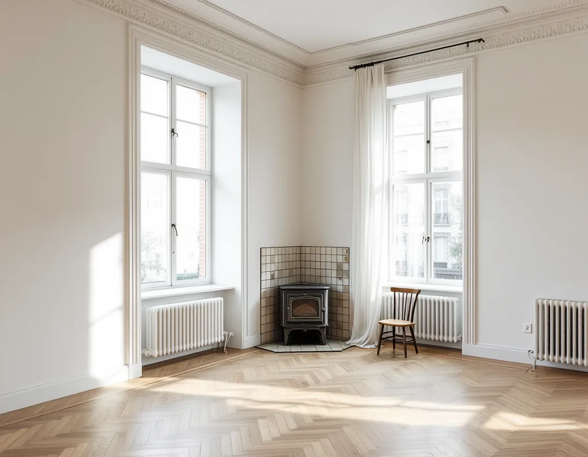
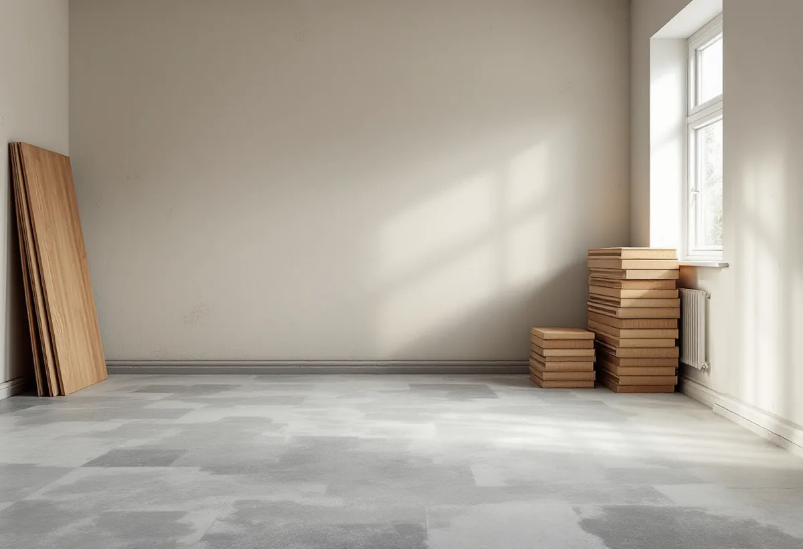

Besök i lägenheten
Vi mäter rummen, kontrollerar underlaget och ser hur material kan bäras in.
I Solna ligger de flesta golvjobb i en lägenhet, och oftast i en bostadsrätt. Det gör föreningen till en del av planeringen redan innan materialet väljs. Geal Entreprenad AB lägger parkett, trägolv och klinker och slipar gamla golv i hela Solna, med gratis platsbesök och skriftligt kostnadsförslag.

Enligt SCB:s statistik över bostadsbeståndet den 31 december 2024 är 70 procent av lägenheterna i Solnas flerbostadshus bostadsrätter och 29 procent hyresrätter. Solna är därmed en av de tio kommuner i landet med störst andel bostadsrätter. I riket som helhet är andelen 42 procent.
För dig som ska byta golv betyder det två saker. Du ansvarar själv för golvet, eftersom bostadsrättslagen säger att lägenheten ska hållas i gott skick på bostadsrättshavarens bekostnad, om stadgarna inte anger något annat. Och arbetet sker i ett hus där grannarna bor vägg i vägg, över och under, så tider, bärhjälp i trapphuset och skydd av gemensamma ytor behöver planeras.

Bostadsrättslagens 7 kap. 7 § räknar upp åtgärder som kräver styrelsens tillstånd: ingrepp i bärande konstruktion, installation eller ändring av ledningar för avlopp, värme, gas eller vatten, ändring av ventilation, påverkan på brandskyddet och andra väsentliga förändringar av lägenheten. Att byta ett ytskikt hör normalt inte dit. Vattenburen golvvärme som kopplas till husets system gör det.
Solna stad skriver i sin guide för lägenhetsinnehavare att den som bor i en bostadsrättsförening behöver fastighetsägarens medgivande för byggåtgärder, och att en vägg som rivs kräver föreningens godkännande och, om den är bärande, en anmälan till staden. Ska golvbytet göras samtidigt som en vägg tas bort hänger alltså frågorna ihop.
Vår rekommendation är att ta kontakt med styrelsen tidigt och beskriva vad som ska göras, även när golvbytet inte kräver tillstånd. Många föreningar vill veta när det blir buller och hur trapphuset skyddas, och en kort beskrivning av jobbet brukar räcka. Kostnadsförslaget fungerar ofta som en sådan beskrivning.
Stadsmuseets texter om Råsunda berättar att Stockholms Nya Spårvägs AB köpte marken 1907 och att förorten, till skillnad från andra förorter, bebyggdes med flerbostadshus för medelklassfamiljer. Reklamen från 1909 lovade att man där kunde förena stadens bekvämligheter med lantlivets behag. Längs Råsundavägen växte jugendhusen upp mellan 1910 och 1912, och villaområdena tillkom på 1920-talet.
I en lägenhet från den tiden kan det finnas äldre trägolv eller parkett som går att slipa i stället för att bytas. Lagen innehåller dessutom en särskild regel: har lägenheten ett särskilt kulturhistoriskt eller konstnärligt värde krävs styrelsens tillstånd för en åtgärd som påverkar det värdet. Fråga därför föreningen innan ett originalgolv rivs. Mer om slipning och ytbehandling finns under golvläggning.
Hagalunds gamla trähusbebyggelse revs från 1965 och ersattes av Blåkulla, som stod inflyttningsklart 1973. I lägenheter från den här tiden ligger ofta plastmatta eller ett enkelt golv som har bytts någon gång. Skatteverket räknar att byta plastmatta mot trägolv som ett förbättringsarbete, och det ger rotavdrag även i en bostadsrätt.
Under en gammal matta kan det finnas limrester och ojämnheter som behöver slipas bort eller spacklas innan ett nytt golv läggs. Är underlaget betong följer vi materialleverantörens anvisningar för fuktspärr och lim. Ska köket göras om samtidigt finns mer under köksrenovering i Solna.
En golvslipning i ett flerbostadshus planeras lite annorlunda än i en villa. Maskinerna låter, dammet ska stanna i lägenheten och material och utrustning ska bäras genom ett gemensamt trapphus. Vi stänger av rummen, använder maskiner med dammsugning och lägger de mest bullriga momenten på tider som föreningens ordningsregler tillåter.
Efter slipningen behöver ytan tid att torka eller härda innan möblerna ställs tillbaka. Hur lång tid beror på om du väljer lack eller olja, och det skriver vi in i tidsplanen så att du vet när lägenheten går att använda igen.
Ska flera rum få nytt golv samtidigt planerar vi i vilken ordning de görs, så att du kan bo kvar under arbetet om du vill. Kök och badrum tas om möjligt sist eller först i ett eget skede, eftersom de är svårast att vara utan. Bärhjälp, skydd och avfall räknas in redan i kostnadsförslaget, så att inget kommer som en överraskning för dig eller föreningen.
Vi mäter rummen, kontrollerar underlaget och ser hur material kan bäras in.
Vi går igenom vad föreningen behöver godkänna och vad som räcker att meddela.
Arbete, material och skydd av gemensamma ytor redovisas var för sig.
Trapphus och hiss skyddas, gammalt golv tas bort och underlaget görs plant.
Det nya golvet läggs eller det gamla slipas, och lister monteras.
Vi går igenom golvet med dig och städar efter oss i trapphuset.
I en bostadsrätt ger Skatteverket rotavdrag för arbete inne i bostaden, och dit räknas att slipa och byta golv, sätta klinker och att byta plastmatta mot trägolv. Arbete på fasad eller balkong ger inte avdrag för dig som bostadsrättshavare.
Avdraget är 30 procent av arbetskostnaden, högst 50 000 kr per person och år och högst 75 000 kr tillsammans med rutavdrag. Geal drar det direkt på fakturan.
Kostnaden styrs av hur många rum och trösklar golvet ska passa mot, hur mycket gammalt golv som ska bort, underlagets skick och om föreningen har krav på ljuddämpning eller viss underlagsduk. Våning, hiss och avstånd till parkering påverkar också tiden. Platsbesöket är gratis och du får ett skriftligt kostnadsförslag.
Parkett, trägolv, klinker och slipning.
Golvläggning i Stockholm →Takbyte, takbesiktning och plåtarbeten.
Takläggare i Solna →Råsunda, Stocksundstorp och Råsta.
Takrenovering i Solna →Bostadsrätt, stambyte och villa.
Badrumsrenovering i Solna →Väggar och tak innan golvet läggs.
Målare i Solna →Altan, dörrar och snickerier.
Snickare i Solna →Ritningar, kontrollplan och slutbesked.
Byggföretag i Solna →Putsade villor och krav på material.
Fasadrenovering i Solna →Plåt i Solnas kulturmiljöer.
Plåtslagare i Solna →Tapet efter husets ålder och underlag.
Tapetsering i Solna →